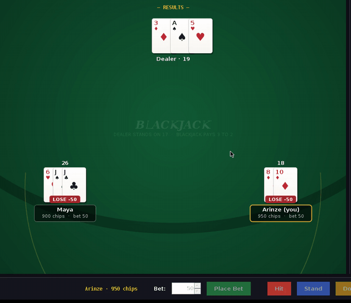
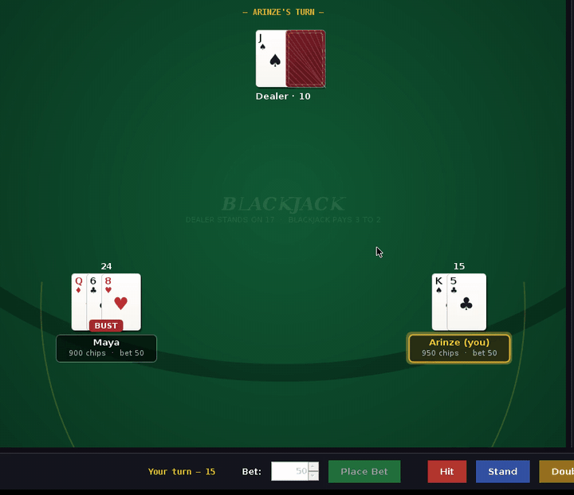
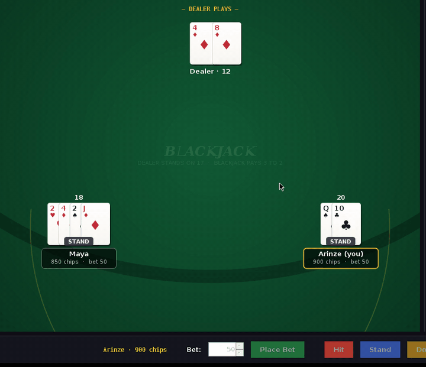
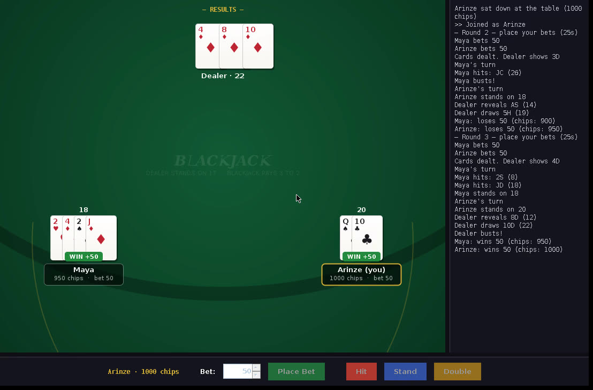

TWO PLAYERS, LIVE SESSION — BETTING → TURNS → DEALER → PAYOUT
A concurrent client-server blackjack game in plain Java — no frameworks, no dependencies. Up to five players share a table over TCP while a multithreaded server keeps every client's view of the game perfectly synchronized through an event-driven protocol.
TWO PLAYERS, LIVE SESSION — BETTING → TURNS → DEALER → PAYOUT
This started as a team project for my Software Engineering course at CSU East Bay, taught by Professor Christopher Smith. The brief: build a networked, multi-user application through a full engineering process — requirements, design documentation, implementation, and demonstration. Our team chose blackjack because it forces the interesting problems: shared mutable state, strict turn order, and clients that must never disagree about what's on the table.
In 2026 I came back to it and refined the project end-to-end: tightened the concurrency model around a single game-loop thread, redesigned the wire protocol around authoritative state snapshots, rebuilt the table UI with custom 2D rendering, and updated all the demo material on this page from the refreshed build. Same assignment, sharper engineering.
Five players, one deck, one dealer. Every action — a bet, a hit, a bust — must appear identically on every screen, in order, even though clients connect, act, and disconnect on their own schedule.
Concurrency. Each connected socket gets its own thread, so the game state is hammered from N directions at once — while round flow (betting windows, turn order, dealer rules) needs one coherent timeline.
One writer, many messengers. Handler threads only feed validated commands
into a monitor-guarded GameTable; a single
game-loop thread owns round progression and broadcasts full state
snapshots after every change.
GAMEPLAY

BETWEEN ROUNDS
Results resolve, chips settle, fresh bets come in, and the next deal goes out — the dealer's hole card stays face-down until every player has acted.

DECISION POINT
The gold highlight marks whose turn it is; the server only accepts Hit / Stand / Double from that seat. Everyone else watches the same state, live.

DEALER PLAYS
Hole card flips, the dealer draws to 17 on a spectator-paced timer, and win / lose / push badges land with the payout math (blackjack pays 3:2).
ARCHITECTURE
SWING CLIENTS ×N
reader thread + EDT
TCP · LINE PROTOCOL
JOIN / BET / ACTION ↔ STATE / LOG
HANDLERS ×N
1 thread / socket
GAME TABLE
1 loop thread · monitor
Binds the ServerSocket, accepts connections,
and spawns one daemon ClientHandler thread per
socket. That's its whole job — policy lives elsewhere.
Blocks on readLine(), parses commands, and calls
into the table's synchronized mutators. Writes go through a per-connection
lock so concurrent broadcasts never interleave mid-line.
Owns seats, deck, dealer hand, and phase. Every public method is guarded by
the table monitor; the game-loop thread sleeps in
wait() until handlers
notifyAll() that the state it needs has arrived.
A reader thread parses STATE lines into immutable
models and hands them to the EDT. The custom-painted table (felt, cards,
badges) renders whatever the server last said — the client holds no game
logic it could get wrong.
DEEP DIVE
The tempting design is to let each client thread mutate the game directly —
until two hits land at once, or someone bets during the deal. Instead, handler
threads are messengers: they validate ("is it this player's turn?") and apply a
single change under the table monitor, then notifyAll().
The game-loop thread is the only place round flow exists.
The payoff is that every tricky scenario — a player disconnecting mid-turn, a
bet arriving after the window closes, a slow player stalling the table — is
handled in one place with one lock, instead of being scattered across N threads.
Timeouts piggyback on the same wait(remaining) call.
GameTable.java — the game loop waits for a turn to resolve
turnName = name; broadcast(); long deadline = System.currentTimeMillis() + TURN_TIMEOUT_MS; while (running && seats.containsKey(name) && seats.get(name).status == Status.PLAYING && System.currentTimeMillis() < deadline) { wait(deadline - System.currentTimeMillis()); // releases the monitor } if (stillPlaying(name)) { // timed out → auto-stand seat.status = Status.STOOD; log(name + " timed out — stands"); }
GameTable.java — a handler thread resolves it
public synchronized void playerAction(String name, String action) { if (!phase.equals(PHASE_TURNS) || !name.equals(turnName)) { seat.handler.send("ERROR|Not your turn"); return; // validation at the door } // ... apply HIT / STAND / DOUBLE to the hand ... broadcast(); // every client sees it notifyAll(); // wake the game loop }
// The same wait/notify pair runs the betting window and the paced dealer draw.
PROTOCOL
Everything on the wire is one UTF-8 line. Clients send intents
(BET|50, ACTION|HIT);
the server answers every state change with a full
STATE snapshot. Clients never simulate the game —
if the server didn't say it, it didn't happen. That makes desync structurally
impossible and reconnection trivial: the next snapshot is the whole truth.
// One snapshot line — phase, dealer hand, whose turn, every seat STATE|TURNS|KS ??|10|Arinze|Maya:850:50:2H 4D 2C J:STOOD:-,Arinze:900:50:QS 10C:PLAYING:- // The dealer's hole card travels as "??" until reveal — clients // can't even peek at bytes they shouldn't render.

PAYOUT — RENDERED FROM ONE LINE
Everything on this screen — the dealer's 22, both WIN +50 badges, the
chip counts, the event feed — is a render of the latest snapshot plus
the LOG stream. The client adds no opinions.
TRADE-OFFS
Sending the whole table on every change is gloriously simple and bug-resistant, but it's O(players²) traffic per round. At five seats it's nothing; at five hundred it would need delta events with sequence numbers. Right trade for this scale — known cliff.
Blocking IO with one thread per socket reads like the game it implements, which is worth a lot. A selector-based event loop would scale further on one box, at the cost of turning readable code into a state machine.
Java serialization was the obvious classroom choice; pipe-delimited text was
the better one. It's debuggable with telnet,
language-agnostic, and immune to serialVersionUID drift — and writing the
grammar forced the state model to stay small.
The 2026 refinement is fully playable: multiplayer rounds with betting, hit / stand / double, timed turns, house-rule dealer, and 3:2 blackjack payouts — verified end-to-end with scripted bot clients driving complete rounds against the live server. The refreshed repository is on its way to my GitHub; the original team version lives at CS401-Blackjack.
Want a walkthrough of the concurrency model or a look at the refined code? Email me.